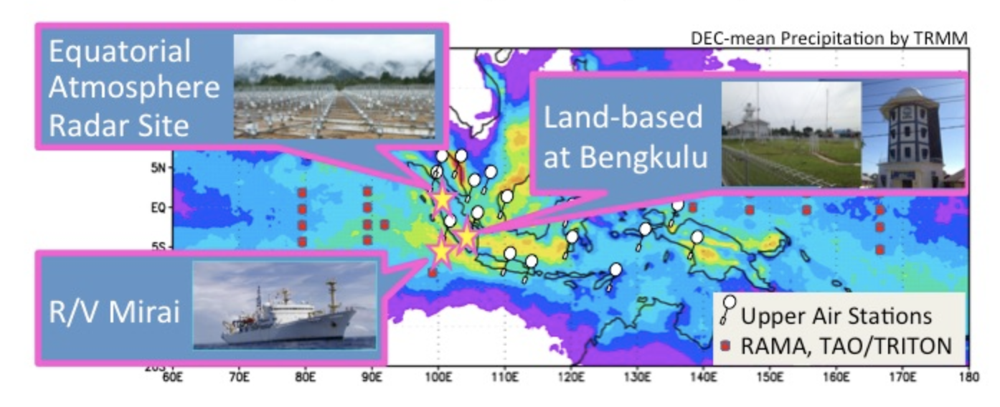

Pre-YMC Observations in 2015
Purpose:
Measure the precipitation mechanism off of and over Sumatra, with a focus on the relationship with:
- Local atmospheric circulation vs. MJO
- IOD (SST condition over the oceanic upwelling region)
Period:
November-December 2015
Location:
Eastern Indian Ocean & Sumatra

Observations:
R/V Mirai: C-band Polarimetric Doppler radar, Radiosonde, CTD, etc.
Bengkulu: X-band Polarimetric Doppler radar, Radiosonde, Surface Met, etc.
Kototabang: Equatorial Atmosphere Radar, Water vapor + Ozone sonde
Basic Observation Strategy
For more information visit: jamstec.go.jp/ymc/campaigns/IOP_pre_YMC_2015